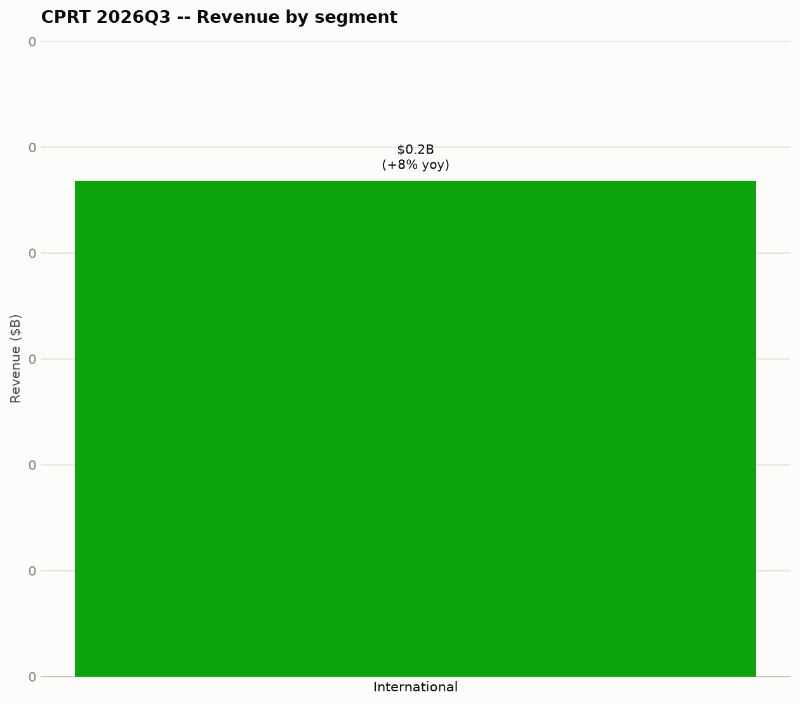
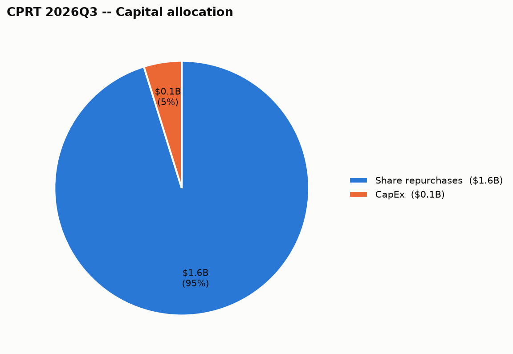

| Segment | Revenue | Growth (yoy) |
|---|---|---|
| International | $234.2M | +8% |
Copart Inc. doesn't disclose gross margin by individual segment in this data, so it's left out rather than estimated.
What's driving each segment:

| Use of cash | Amount |
|---|---|
| Share repurchases | $1.60B |
| CapEx | $80.9M |
Total returned to shareholders (dividends + buybacks): $1.60B.
| This quarter | |
|---|---|
| Cash & securities | $4.20B |
When it's due: $0 in next 12mo, $0 in year 2, $0 in year 3, $218.8M in year 4, $0 in year 5 — the aggregate principal-by-year figure Copart Inc. files with the SEC (as of 2021-07-31); individual notes (coupon, specific maturity date) aren't broken out at that level in this data.
Total loss frequency is, in turn, a function of ever-rising repair costs, but more importantly, the differentiated returns that Copart generates by finding the highest and best use for a car globally, which is often full restoration back to roadworthiness. We are focused, as always, on delivering superior outcomes for our clients, first and foremost, through auction returns, but also, of course, through our differentiated service offerings from vehicle retrieval to title processing.